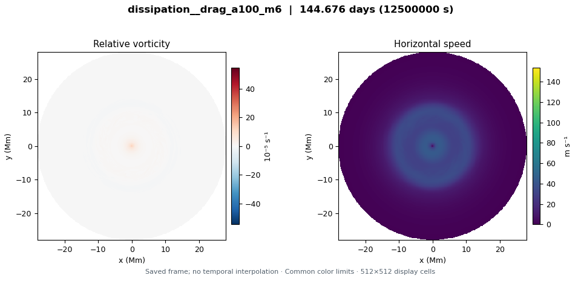
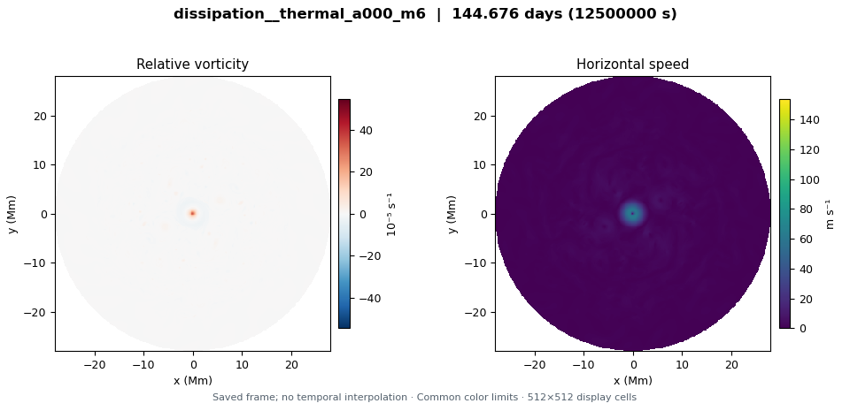

Momentum drag · resting deep flow
L_D 3,200 km · deep-jet fraction 0 · convection off
View six saved states →Four completed 1.5-layer QG runs compare momentum drag with layer-thickness relaxation, each with resting deep flow or a prescribed deep jet matching the initial upper jet component. All runs share the initial upper winds, central cyclone, small sixfold seed, 3,200-km deformation radius and planetary rotation; convection is off. Each spans 144.68 Earth days. This coarse preview shows six actual saved states selected from 26 per run, with shared field scales and diagnostics over the full integration. No pattern-speed fit is included.
L_D 3,200 km · deep-jet fraction 0 · convection off
View six saved states →
L_D 3,200 km · deep-jet fraction 1 · convection off
View six saved states →
L_D 3,200 km · deep-jet fraction 0 · convection off
View six saved states →L_D 3,200 km · deep-jet fraction 1 · convection off
View six saved states →Field scales use the 24 selected saved states (six per run); the mode plot scale uses all saved diagnostic times.
Collection provenance